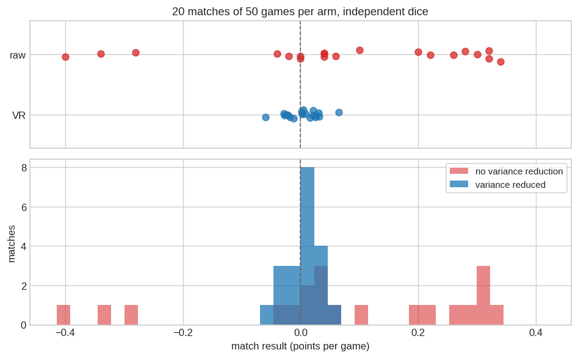
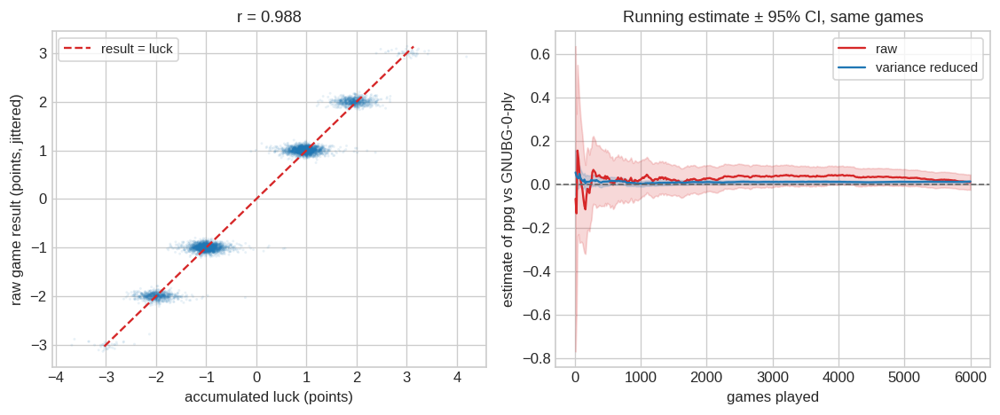
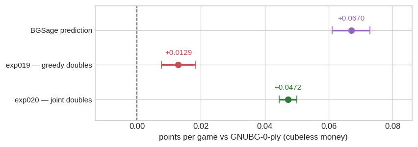

Variance-Reduced Rollouts
How Raccoon measures a 0.05-point-per-game edge without playing hundreds of thousands of games — and the evidence it isn’t cheating
Raccoon is a backgammon engine, and the only claim that ultimately matters about one is does it win? So its strength is settled by playing games against a reference opponent — here GNU Backgammon — and reporting the average margin in points per game (ppg) under cubeless money scoring: a plain win counts 1, a gammon 2, a backgammon 3. Both sides play at 0-ply, meaning each ranks its legal moves by a static evaluation of the resulting position, with no further search.
That is the honest way to measure an engine, and it is also where the project kept hitting a wall: backgammon between two strong engines is almost entirely dice. A single game’s result swings by more than a point, while the difference we need to resolve is around 0.05. Separating a real edge that small from dice noise takes tens of thousands of games — and to say it precisely, hundreds of thousands.
This page documents the tool that removes most of that noise, the argument for why it does not distort the answer, and a demonstration that it behaves as claimed. It then puts it to work twice: exp019, the first head-to-head measurement of exp018/ep22, the project’s strongest network — and exp020, which chases down a discrepancy exp019 exposed and finds a real bug in how the engine plays doubles. The second would not have been findable without the first: at the old resolution, the effect was invisible.
The technique is not new — it is what eXtreme Gammon, GNU Backgammon and BGSage all do in their rollouts, and this project pre-registered it as future work after a cheaper shortcut turned out to be biased. What is new here is the implementation, and the evidence that it works.
The problem, in numbers
A backgammon result is worth ±1 (plain win), ±2 (gammon) or ±3 (backgammon). Two near-equal players trade those outcomes almost at random, so over the 6,000 games played for exp019 the per-game result has a standard deviation of 1.37 — some 27 times the effect we are trying to detect. The 95% confidence interval on the mean shrinks only as 1/√n:
| games | 95% CI on raw ppg | wall-clock on 3 CPU workers |
|---|---|---|
| 100 | ±0.269 | 3 min |
| 1,000 | ±0.085 | 33 min |
| 6,000 | ±0.035 | 3.3 h |
| 100,000 | ±0.009 | 2 days |
| 254,434 | ±0.005 | 6 days |
The project’s standard benchmark, n=6,000, buys ±0.035. Against a hypothesised edge of +0.05 that is a 2σ test with roughly 55% power — barely better than a coin flip on whether a real effect shows up at all. And reaching ±0.005, the precision actually achieved below, would take about 254,434 games: 42× the compute, and the bottom row of that table.
So the question is not how to buy more games. It is whether the same games can be made to say more.
NoteA correction found along the way: the per-game SD is 1.36, not 1.8
This project has assumed a per-game equity SD of 1.8 since its earliest benchmarks, and scripts/eval_gnubg0.py hard-coded it. Measuring it directly here shows that 1.8 is the variance, not the standard deviation: over 1,000 games the outcome distribution is -3: 0.6%, -2: 12.7%, -1: 33.1%, +1: 40.3%, +2: 12.7%, +3: 0.6%, whose variance is 1.85 — and whose standard deviation is therefore 1.36.
The consequence is that every raw-ppg confidence interval the project has published is about 1.32× too wide — n=6,000 gives ±0.034, not the ±0.046 previously quoted. Every such interval was therefore conservative, so no earlier conclusion is overturned; the affected results (for instance exp011b’s −0.053 ± 0.046, which becomes −0.053 ± 0.034) get stronger, not weaker. eval_gnubg0.py now computes the interval from the sample instead of assuming a constant.
One caveat on generalising it: this SD is measured at near-parity. A weaker network losing many gammons has a wider outcome distribution, which is the most likely origin of the 1.8 figure in the first place.
The method
They can, because most of that variance is identifiable. When a player rolls double sixes and hits, the result swings for a reason we can point at, and — crucially — for a reason we can put a number on before knowing how the game turns out.
At every pre-roll position \(s\), before the dice are thrown, define
\[h(s, d) \;=\; \text{equity after best play of roll } d, \text{ from a fixed player's point of view}\]
\[m(s) \;=\; \sum_d p(d)\, h(s, d) \qquad\qquad \text{luck} \;=\; h(s, d_{\text{actual}}) - m(s)\]
\(m(s)\) is what the position was worth before the roll: the average over all 21 distinct rolls, doubles weighted 1/36 and non-doubles 2/36. (The opening roll is the one exception — doubles are re-rolled there, so it averages over 30 equally likely outcomes instead, and the position is symmetric, so that average is exactly zero.) The luck of the roll that actually came up is how much better or worse than that average it was. Accumulate this over both players’ rolls for a whole game — a good roll for the opponent is bad luck for us, with the sign flipped — and report
\[\text{vr} \;=\; \text{raw game result} \;-\; \textstyle\sum_t \text{luck}_t\]
A worked example: the opening roll
The clearest case is the very first roll, because the position before it is symmetric and therefore worth exactly zero to both players. Whatever the roll turns out to be worth is pure luck. Here is what Raccoon’s control variate says about it, from the roller’s point of view:
| best openers | luck | worst openers | luck |
|---|---|---|---|
| 3-1 | +0.160 | 2-1 | −0.006 |
| 4-2 | +0.114 | 4-1 | −0.003 |
| 6-1 | +0.091 | 5-1 | +0.001 |
Win the opening roll with 3-1 and you bank about a sixth of a point before playing a single checker; the estimator hands that back. Win it with 2-1 and you have gained nothing at all — after your reply the opponent is on roll, and that is worth about as much as your move was.
This is also a free correctness check, because backgammon players already know the answer: 3-1, 4-2 and 6-1 — making the 5-point, the 4-point and the bar-point — are the three best opening rolls, and the 1-plays that neither point nor prime are the weakest. Nothing in the implementation was tuned to produce that ordering; it falls out of GNUBG’s evaluation. And the 30 values average to zero to twelve decimal places, as symmetry demands.
Why this doesn’t bias the answer
The obvious worry is that we are adjusting results using an estimate, and estimates are wrong. The reason it is safe is that the correction has mean exactly zero, by construction:
\[\mathbb{E}\big[\text{luck}_t \,\big|\, \text{history}\big] \;=\; \sum_d p(d)\, h(s_t, d) \;-\; m(s_t) \;=\; 0\]
because \(m(s_t)\) is that sum. This holds for every roll regardless of what \(h\) is, so the accumulated correction is a mean-zero martingale, and subtracting it cannot move the expectation of the estimator. As David Montgomery put it in the canonical explanation of the technique:
The luck associated with a roll […] averages zero. That’s the way averages work. […] Subtracting zero can’t change the expected value of a rollout. No matter how poorly a program understands a position, luck estimates will still average zero.
A bad evaluator makes the technique less useful — the correction correlates less with the result, so less variance is removed — but never makes it wrong. That is an unusually forgiving property, and it is the whole reason this is worth doing.
The rule that makes it self-consistent
There is one way to break it, and this project has already broken it once.
\(h\) must be the same function on both legs of the subtraction, and in particular it must not depend on the move actually played. Raccoon always uses GNUBG’s 0-ply best-play value for whoever is on roll — whatever either side actually does, and at whatever ply they think. If Raccoon blunders, no luck term changes; the cost lands in the raw result and in the next pre-roll position, which is exactly where it belongs.
An earlier metric in this project, “error-rate ppg”, violated this. It charged the network for the equity its chosen move conceded, against a pre-roll value that was not that quantity’s own dice-average. The implicit luck term was therefore not zero-mean, and the metric read −0.128 where the truth was about −0.05: a bias of ~0.07 ppg, larger than the effects it was being used to measure. It was dropped in July 2026 and the correct construction noted as future work. This page is that future work.
The same trap is visible in other engines. BGSage evaluates the played move on the actual leg against the 1-ply-best move in the mean; when its decision ply exceeds its variance-reduction ply those differ, leaving a small residual bias it polices with a paired t-test. Raccoon’s formulation closes that gap by never letting the played move enter the control variate at all.
How Raccoon implements it
The estimator lives in raccoon/eval/luck.py, the match loop in raccoon/eval/vr_arena.py, and the driver in scripts/eval_gnubg_vr.py. Four implementation decisions are worth recording, because three of them were bugs first.
The 21-roll sweep is native, and it is nearly free.
The obvious route — loop over every legal move of every roll and ask GNUBG to evaluate each resulting position — costs about 260 ms per pre-roll position, which would have made variance reduction roughly thirteen times more expensive than the game it is measuring. Going through gnubg_nn.best_move, which generates and ranks a whole roll (all four half-moves of a double included) inside C, costs ~2.6 ms for the same 21-roll sweep, and agrees with the slow route exactly.
Over the 56 pre-roll positions of an average game that is ~0.15 s of extra work against a game that costs ~6.2 s to play: a ~2% overhead for a 42-fold gain in statistical efficiency. (End-to-end wall-clock on the two demonstration arms — identical games, differing only in whether the correction was computed — came out at 6.19 s and 6.16 s per game, in the same range; those runs share a desktop with other work, so the arithmetic above is the more reliable figure.)
Terminal rolls need their exact value. The adapter’s candidate_equities reports a flat +3.0 for any move that ends the game — correct for ranking moves, since a win is a win, but catastrophic here: it would score every game-ending roll as a backgammon and inject a large spurious luck term at the end of every game. The sweep instead classifies the finished position properly into 1.0 / 2.0 / 3.0.
GNUBG’s own move-list equities are not trustworthy in races. best_move returns a detail tuple with probabilities and an equity, and using them directly looked natural. On a bear-off position it reported P(win) = 1.0 and equity 0.912 for a position that probabilities() scores at 0.982 with the opponent still winning 5.7% of the time. So best_move is used for move generation only; the position it lands on is reconstructed from the returned position key and re-evaluated through the same probabilities() call the rest of the project uses. With that fix the fast route agrees with the slow one exactly — 2,160 of 2,160 rolls across 60 real pre-roll positions, doubles and game-ending rolls included.
The control variate is 0-ply, and must be. best_move segfaults at ply ≥ 1 on real bear-off boards, so anything deeper is refused outright rather than risked mid-run. This costs nothing: evaluating each roll’s best reply is one ply of lookahead, so a 0-ply leaf already yields a 1-ply pre-roll mean — the same depth GNUBG and BGSage use for their own variance reduction. The opponent’s playing strength is a separate setting and can be anything.
One more property matters for how the demonstration below is framed: the control variate touches no randomness. It reads GNUBG through a pure C path and draws the roll from the same call on the same distribution whether or not it is enabled. Turning variance reduction on therefore plays identical games from the same seed — asserted in tests/test_luck.py.
Is it unbiased?
Three checks — two exact, one empirical.
The zero-mean property is asserted directly, in CI. test_luck_is_zero_mean_exact enumerates every outcome of real pre-roll positions through the production code path and checks that the probability-weighted luck sums to zero to within 1e-9, from both players’ perspectives. This is the property everything rests on, so it is tested rather than reasoned about. Two supporting tests cover the ways it can silently break: the chance-action-to-dice table is verified against OpenSpiel’s own labels at both node sizes, and the fast sweep is verified against OpenSpiel’s move generation roll by roll.
The opening position gives a free exact check, as shown above: its pre-roll mean is zero to twelve decimal places even though individual opening rolls are worth up to +0.16, and the ranking of those rolls matches established backgammon theory. A sign error, a mis-mapped dice table or a perspective flip would all show up here immediately, so this is asserted as a test too.
Empirically, the correction has no detectable mean.
Over the 6,000 games of exp019 the accumulated luck averages -0.0028 ± 0.0345 points per game (t = -0.16) — consistent with zero, as it must be. Equivalently: the raw and variance-reduced estimates of the same quantity, on the same games, are +0.0102 and +0.0129, and they differ by exactly that mean luck.
What is missing, on the record. The strongest possible check would have been external: re-measure exp011b/ep3, the one checkpoint with a published raw answer (−0.053 ± 0.046 at n=6,000), and confirm the variance-reduced estimate lands inside that interval with a far tighter one. That run was considered and deliberately skipped to save an overnight slot. The evidence above is solid but all internal, and this remains the first follow-up if the result below ever looks surprising.
How much does it buy?
Two independent sets of matches, played with the same network against the same opponent: twenty matches of fifty games with variance reduction off, then twenty more with it on, on different dice. Nothing is shared between the two sets — they are separate samples of the same process, which is legitimate precisely because enabling the correction does not change how the games are played.
| matches | mean of match results | 95% CI | SD across matches | |
|---|---|---|---|---|
| no variance reduction | 20 | +0.0720 | ±0.0962 | 0.2195 |
| variance reduced | 20 | +0.0034 | ±0.0124 | 0.0283 |
The two arms disagree entirely on how confidently they speak: the spread across matches is 7.8× narrower, which at equal precision is worth 60× as many games. Twenty matches is a thin basis for a ratio, so that figure carries a bootstrap 95% interval of [4.8×, 12.4×]. The picture is the point here; the number comes from the 6,000-game run below, where the same ratio is 6.51× (42× the games).
They also agree on the answer — the arm means differ by +0.0686 ± 0.0970, which is consistent with zero. That is a weak statement rather than a strong one, and worth being explicit about: the interval is wide almost entirely because of the raw arm, which is exactly the problem being solved. It rules out a gross bias, not a subtle one; the sharp unbiasedness evidence is the exact zero-mean property above.
Why it works this well

The left panel is the mechanism: accumulated luck explains 97.6% of the variance in the raw result (r = 0.988), and the cloud sits on the 45° line rather than merely near it. Backgammon between two strong engines really is mostly a dice-reading exercise, and a one-ply lookahead reads the dice well enough to account for nearly all of it. What survives the subtraction is the part that is actually about skill.
That the relationship sits on the diagonal is itself a calibration check. Fitting the regression-optimal coefficient — the β that would minimise variance in raw − β·luck — gives β̂ = 0.995, within a few thousandths of the 1.0 the estimator uses. (The estimator keeps β = 1 deliberately: any fixed coefficient stays exactly unbiased, whereas one fitted on the same sample does not.)
The right panel is the practical consequence. Both estimators are computed from the same 6,000 games and converge on the same answer, but not at the same speed: the variance-reduced estimate is already tighter after 142 games than the raw one is after all 6,000.
exp019 — does exp018/ep22 beat GNUBG-0-ply?
Motivation. exp018/ep22 is the project’s best network, and on the static BGSage benchmark it is already past GNUBG-0-ply — PR 0.950 over 14,693 checker decisions, rollout-tier MSE 0.00190 over ~149k candidates, both better than the 0-ply reference. But a static benchmark scores move choices against a fixed position set; it does not play games. The exp018 write-up flagged the gap explicitly: a raw-ppg confirmation at matched search was still outstanding. Until now it was not affordable.
Setup. exp018-distill/ep22 (10×256, six-outcome value head) playing 0-ply greedy value lookahead against GNUBG at 0-ply, cubeless money scoring, seats alternated. Primary metric fixed in advance in experiments/pipeline_exp019.sh: variance-reduced ppg, n = 6,000 games, 95% CI from the empirical SD of the per-game variance-reduced values. One arm only — ep22 was selected on the BGSage benchmark, an independent metric on independent data, so this is a clean confirmation with no winner’s-curse correction needed, and no epoch sweep was run on this metric.
Results.
| estimator | ppg vs GNUBG-0-ply | 95% CI | interval | per-game SD |
|---|---|---|---|---|
| raw (unbiased ruler) | +0.0102 | ±0.0348 | [-0.025, +0.045] | 1.374 |
| variance reduced | +0.0129 | ±0.0053 | [+0.0076, +0.0183] | 0.211 |
n = 6,000 games, 3,022 wins (50.4%). Supporting diagnostics: mean luck -0.0028 (t = -0.16), corr(raw, luck) = 0.988, β̂ = 0.995, SD ratio 6.51× (42× the games).
Interpretation. The variance-reduced interval [+0.0076, +0.0183] excludes zero (z = +4.8), so on this evidence ep22 beats GNUBG-0-ply in head-to-head play. The raw estimator, on the very same games, cannot resolve it at all: +0.0102 ± 0.0348, an interval spanning both a meaningful edge and a meaningful deficit — consistent with the variance-reduced value, as it must be, since the two differ by exactly the mean luck. That contrast is the point of this page: matching this precision by brute force would have taken roughly 254,434 games, 42× what was actually played.
The remaining caveats are unchanged. This is 0-ply against 0-ply and cubeless, so it says nothing yet about GNUBG at 2-ply, and nothing about cube handling.
It does, however, settle a question the project has carried since the distillation track began. The static BGSage benchmark had already put ep22 past GNUBG-0-ply on move-selection error and on value accuracy; play now agrees on the direction. A network distilled from GNUBG has passed its own teacher at matched search, over the board and not merely on a scorecard.
The two do not agree on the size of the edge, which is the subject of the next section.
Cross-check: what the static benchmark predicted
The BGSage benchmark scores an engine’s move choices against rollout-quality references and reports PR — mean equity error per checker decision, ×500. Because that is an error rate in points, it makes a falsifiable prediction about points per game, and this is the first time the project has been able to test it.
| PR (n = 14,693) | equity error per decision | |
|---|---|---|
| GNUBG, 0-ply | 2.145 | 0.00429 |
exp018/ep22 |
0.950 | 0.00190 |
| difference | 1.195 | 0.00239 |
A game runs 56.1 rolls, so each side makes about 28 checker decisions. If error rates simply accumulated, ep22’s advantage would be 0.00239 × 28 ≈ +0.067 ppg. Measured: +0.0129 ± 0.0053.
Those do not agree — the measured edge falls short of the predicted one by 0.054 ppg, about 20 standard errors. Both numbers are sound on their own terms, so the discrepancy is real and worth naming rather than smoothing over. Two explanations are available, and they are testable:
The benchmark’s positions are not the positions that arise in this matchup. BGSage’s set comes from Sage 3-ply self-play. An error rate measured there need not transfer to the distribution generated by ep22 playing GNUBG, and a rate advantage concentrated in positions that rarely occur here would buy little.
The network cannot execute a doubles turn as well as it can evaluate one. This is the more specific candidate, and the arithmetic fits. On the benchmark every candidate is a complete move, and the network scores the finished position. In play, OpenSpiel splits a double into two consecutive decisions, and
raccoon/train/lookahead.pyranks the first half by the static value of the intermediate position — a position the value head never saw in training, having been trained on pre-roll positions only. It then picks the second half greedily. GNUBG, throughcandidate_equities, recurses and optimises all four half-moves jointly. So on doubles the two engines are not playing by the same rule, and only one of them is handicapped.Doubles are 1/6 of turns, or about 4.7 per player per game. Absorbing the 0.054 ppg shortfall would take a loss of only 0.012 points per doubles turn — an entirely ordinary cost for greedy-decomposed play against joint optimisation over four half-moves.
Explanation 2 predicts something checkable, and exp020 below checks it: if the two-step path is really conceding equity, then replacing it with joint enumeration should recover points without touching the weights — a strength bug, not a measurement artefact, and one that would convert a benchmark advantage the network already has into points it does not currently collect.
Conclusion.
Does
exp018/ep22beat GNUBG-0-ply? → Yes: ep22 = +0.0129 ± 0.0053 (variance-reduced ppg vs GNUBG-0-ply, n=6,000).
That number stands as measured, but it is not the current engine’s strength. exp020 below found a bug in how it executed doubles; the same weights, playing correctly, score considerably higher.
exp020 — the doubles execution bug
Hypothesis. Raccoon’s greedy two-step doubles execution is a strength bug, and fixing it collects ppg the static benchmark says the network has already earned.
When you roll a double in backgammon you play four half-moves, not two. OpenSpiel models that by splitting the turn into two consecutive decisions by the same player, two half-moves each, with no dice roll in between. That is a reasonable way to keep the action space small, and it quietly created an asymmetry in the arena.
GNUBG’s side handled it correctly. candidate_equities recurses: it scores each half-1 option by the best half-2 continuation available after it, so all four half-moves are chosen together.
elif child.current_player() == me:
# Doubles half-1 still pending a half-2 by the same player. Our
# equity for this half-1 action is the best over the half-2 subgame.
my_equity = max(eq for _, eq in candidate_equities(child, ply))Raccoon’s side did not. It ranked half-1 by the static value of the intermediate position — the board halfway through its own turn — and then chose half-2 greedily. Worse, the value head cannot evaluate such a position even in principle: encode_pre_roll hands it over with the dice cleared and the mid-doubles flag off, which says “you are about to roll” about a position where the mover still owes two half-moves of a known die. The network was never trained on anything like it, and could not have been — gen_gnubg_selfplay.py writes one record per turn at the start-of-turn pre-roll and skips mid-doubles states outright, so none of the 40M distilled positions is one.
Doubles are 1/6 of rolls, and about four fifths of them leave enough legal play to need both decisions — measured below at 3.79 such turns per game. On every one of those the two engines were not playing by the same rule, and only one of them was handicapped.
None of this shows up on the BGSage benchmark, where every candidate is a complete move and the network simply scores the finished position. That is precisely why the benchmark could rate ep22 above GNUBG-0-ply while play did not: the benchmark measures the value function, and the bug is in the search around it.
What it costs
The fix is to give Raccoon the same recursion GNUBG already had, so both sides optimise the whole turn. That is a pure inference-time change: identical weights, identical benchmark score, different search. Before running it over 6,000 games, the cost of the old path was measured directly. At every turn, both arms are played out on clones from the same position and the resting positions compared:
\[\text{concession} = \mathrm{eq}_{\text{GNUBG}}(\text{final}_{\text{joint}}) - \mathrm{eq}_{\text{GNUBG}}(\text{final}_{\text{greedy}})\]
Both finals come from the same network, so this isolates how the value function is searched from how good it is. GNUBG at 2-ply prices the difference, and only when the two arms actually disagree — when they land on the same position the concession is exactly zero. The games play the greedy arm, so the sample is the exp019 playing distribution.
| value | |
|---|---|
| games | 1,500 |
| net turns scored | 41,626 |
| of which two-step doubles turns | 5,685 (3.79/game) |
| greedy and joint pick different moves | 15.9% of them |
| mean concession when they differ | +0.0624 |
| mean concession per doubles turn | +0.00911 ± 0.00111 |
| implied cost | +0.0345 ± 0.0042 ppg |
| same, judged at 0-ply instead of 2-ply | +0.0326 ppg |
The two engines agree on most doubles turns; the damage is concentrated in the 16% where they do not, and there it averages +0.062 — blunder-sized. Set against the 0.054 ppg shortfall exp019 could not explain, this accounts for 64% of it.
NoteThe control that makes this measurable
A concession this small is only worth reporting if the machinery producing it is known to be right. The check is built in: non-doubles turns. A turn that needs one OpenSpiel action has one leaf per legal action, so both arms enumerate the identical set and must agree — exactly, not approximately. Any non-zero concession there would be a harness bug (a bad resting signature, a sign error, a mis-priced terminal), and it would be indistinguishable from a real effect if it went unnoticed.
Over 35,941 non-doubles turns in this run: 0 disagreements, maximum absolute concession 0.0e+00. The same property is pinned at the child_values level in tests/test_doubles.py, so it cannot regress silently.
Note also what the arithmetic does not depend on. Because every non-doubles turn scores exactly zero, the total concession per game is the same number whether or not a turn is classified as doubles correctly — the headline is robust to that judgement call, and only the per-turn averages above use it.
Does fixing it collect the points?
That is a question about ppg, so it needs the tool this page is about: the same variance-reduced measurement as exp019, same opponent, same n, same seeds — changing only how the network executes a double.
The baseline arm is exp019’s published result rather than a fresh run, which is only legitimate if the refactor left the old path untouched. It did: over 277 real decisions the rewritten greedy path chooses the same action index as the pre-exp020 implementation, 277/277 — not merely the same resulting position. The leaf deduplication that makes joint enumeration affordable is invisible to the arm that does not use it.
| engine | doubles execution | VR ppg vs GNUBG-0-ply | 95% CI |
|---|---|---|---|
| exp019 baseline | greedy two-step | +0.0129 | ±0.0053 |
| exp020 | joint over four half-moves | +0.0461 | ±0.0047 |
| +0.0331 gain | z = +9.14 |
Both arms: n = 6,000 games, identical weights, identical seeds. The two estimates are independent samples, so the CI on the difference is computed unpaired — the conservative choice, since shared dice can only help.
The gain is real: executing a doubles turn jointly rather than greedily is worth +0.0331 ppg, with the weights untouched. ep22’s PR is still 0.95 — that metric scores complete moves and never enters this code path — so the network did not get stronger. It stopped throwing points away on 1/6 of its turns. Free, and invisible to every benchmark the project runs.
Set against the 0.054 ppg the benchmark seemed to promise and play did not deliver, this recovers 61%.
And the two halves of the experiment agree. Stage 1 added up equity conceded at individual decisions and predicted a cost of +0.0345 ± 0.0042 ppg. Stage 2 measured the change in who actually won, and got +0.0331. Those are different quantities computed from different games by different means — a sum of per-decision GNUBG equity errors on one side, a difference of variance-reduced game outcomes on the other — and they land 0.0014 apart. That agreement is the strongest evidence on this page that both instruments are working.
+0.021 ppg still separates the two. To know whether that gap is real rather than two noisy numbers disagreeing, the prediction needs an error bar of its own — which exp019 never gave it. Scoring both engines on the same 14,693 benchmark decisions and differencing them per decision (paired, so the position-to-position variation cancels) gives a predicted +0.0670 ± 0.0059 against a measured +0.0461 ± 0.0047. The residual is +0.0210 ± 0.0076, z = 5.44. It is real.
It is also not something more games can settle. 61% of that interval’s variance comes from the benchmark prediction, not from the play measurement — tripling to n=18,000 would tighten the residual only from ±0.0076 to ±0.0065, and even infinitely many games would only reach ±0.0059. The bottleneck is on the benchmark’s side.
So the residue stands as the other exp019 explanation predicted: BGSage’s positions come from Sage 3-ply self-play, and an error-rate advantage measured there need not transfer intact to the distribution ep22 generates against GNUBG. Testing that needs a different experiment — scoring both engines on positions drawn from their own head-to-head games — not a longer run of this one.
One assumption underneath all of it deserves naming: converting an error rate into points per game assumes per-decision equity errors accumulate linearly into the final result. That is a model, not an identity. exp020 happens to calibrate it — stage 1 summed per-decision errors over real games and predicted +0.0345, stage 2 measured +0.0331 in outcomes, so the assumption is good to about 4% over this range. Applying that same correction to the benchmark’s 0.0670 would move it by under 0.003 and leave the residual intact.

What this means for the project’s older numbers
Every head-to-head ppg the project has ever reported was measured with the greedy path, so every one of them understates the network that produced it — including exp019’s own +0.0129 and exp011b’s −0.053 ± 0.034.
They are not being retroactively restated here, for two reasons. They are correct as measurements of the engine at the time — the games really were played that way — and the conclusions drawn from them (which checkpoint beat which) compared arms that all shared the handicap, so those comparisons stand. Nor is the correction a constant: it depends on how well a net’s value function handles mid-turn positions, so ep22’s +0.0331 cannot simply be added to a weaker checkpoint’s score. What can be said is the direction — every historical ppg is a lower bound — and that any future comparison against one of them should either re-measure the baseline or note the asymmetry.
The static BGSage numbers are untouched. PR and value-head MSE score complete moves against fixed references and never enter this code path — which is exactly why the disagreement between the two families of metric was the clue worth chasing.
Conclusion.
Is Raccoon’s two-step doubles execution a strength bug worth fixing? → Yes: joint enumeration is worth +0.0331 ppg (z = +9.14), taking
ep22from +0.0129 ± 0.0053 to +0.0461 ± 0.0047 (variance-reduced ppg vs GNUBG-0-ply, n=6,000 each, identical weights).
What this does and does not change
Variance reduction is a measurement tool, not a strength gain. It does not alter a single move; the network that plays is the network that plays. What it changes is the price of knowing how good that network is: the project’s established rulers stay valid, but a comparison that used to need tens of thousands of games now needs a few thousand.
The strength gain in exp020 is not an exception to that — it came from the measuring. A 0.05 ppg discrepancy between benchmark and play is invisible at ±0.035; it only became a question worth asking once the interval was ±0.005, and only then did anyone go looking at the code that answers it. Sharper instruments find bugs, which is a large part of why they are worth building.
Two limitations worth stating. First, the estimator is unbiased but its variance reduction is only as good as the control variate — a position class GNUBG’s 0-ply evaluator reads poorly is a class where less noise gets removed, silently. Second, none of this helps against a slow opponent: the cost of measuring GNUBG at 2-ply is dominated by GNUBG’s own thinking time, not by the estimator, though the same 6,000 games would now say a great deal more than they used to.
Left on the table, in rough order of value: the external unbiasedness control against exp011b/ep3; a 2-ply opponent, now finally affordable in information terms; and stratified opening rolls, an orthogonal and completely free further reduction, deliberately left out here so it would not confound the comparison. The doubles-execution question is no longer on this list — exp020 settles it below.
References
- David Montgomery, Variance Reduction, GammOnLine, February 2000 — the canonical explanation, and the source of the zero-mean argument quoted above.
- GNU Backgammon,
rollout.c(BasicCubefulRollout) — accumulatesarMean − aaar[actual]over all 36 rolls (30 for the opening) for both players, and applies it to the trial’s outcome, exactly as here. - GNU Backgammon manual, Rollouts — variance reduction and the separate technique of quasi-random dice.
- BGSage,
ROLLOUT.md§4 andcpp/src/rollout.cpp— a production implementation with per-branch cubeful variance reduction; its measured 6.5× reduction in standard error on cubeless equity is the closest published comparison to the figure obtained here.